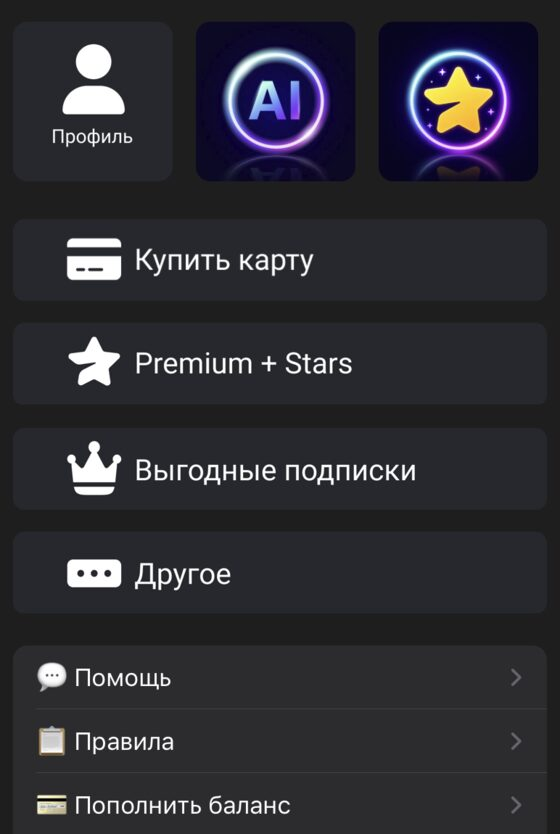
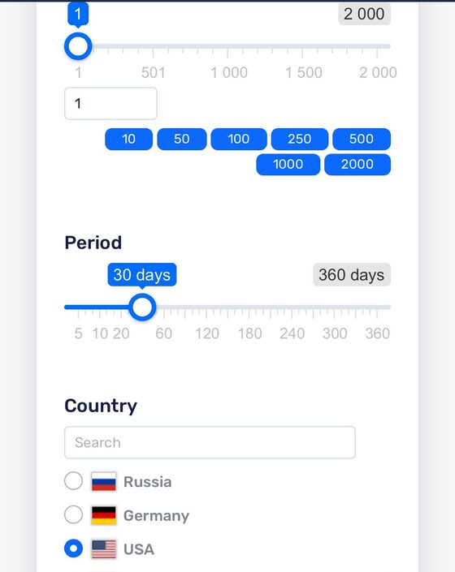
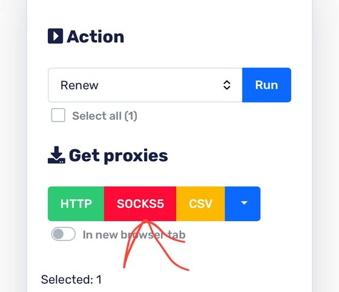

MintCard — запасной вариант. Берите её, только если оплата картой Заруба не проходит. Баланс пополняется только криптовалютой, рублями не получится.

@mintcardbot — запасная карта (Telegram)| Провайдер | Цена / мес | Чем хорош |
|---|---|---|
| DigitalOcean ⭐ digitalocean.com | от $6 | Наш выбор. Сервер выдаётся сразу после оплаты, карта США проходит стабильно. Серверы в США: Нью-Йорк и Сан-Франциско |
| netcup netcup.com | от €5 | Дешевле всех. Надёжный, есть сервер в США (город Манассас) |
| Hetzner hetzner.com | от €4 | Дёшево и надёжно. Есть серверы в США |
| Vultr vultr.com | от $6 | Серверы во многих городах США |
| Linode linode.com | от $5 | Крупный надёжный провайдер, есть серверы в США |
Все компании из таблицы зарубежные, серверы есть и в США, и в Европе. Начинайте с DigitalOcean. Дешевле всех netcup, но сервер там выдают не сразу. При покупке выбирайте страну США или Европу.
Цены в таблице — за самые младшие планы, и для VPN такого плана достаточно. План на 2 ядра и 4 ГБ, если сразу берёте с запасом под OpenClaw, стоит $20–24 в месяц (у Vultr $20, у Linode $24 по их прайсам).
1. Страна сервера — США или Европа. Держите её же для VPN. У DigitalOcean в США это Нью-Йорк или Сан-Франциско. Главное — не Россия.
2. Только зарубежная компания. С российских серверов многие сайты не открываются. Берите из таблицы выше.
3. Чем платить. Картой США из шага 02 или криптовалютой. Карты РФ зарубежные компании обычно не принимают.
4. Размер. Для VPN хватит минимального плана: 1 ядро, 1 ГБ памяти, 10 ГБ диска. Если на этот же сервер поедут OpenClaw и боты связок, берите 2 ядра и 4 ГБ.
| Ваша ОС | Скачать |
|---|---|
| macOS 13+ Ventura, Sonoma, Sequoia, Tahoe | 📦 скачать .pkg |
| macOS 10.15–12 Catalina → Monterey | 📦 скачать .zip |
| Windows 10/11 | 📦 скачать .exe |
Не знаете версию macOS? Нажмите → «Об этом Mac».
Не знаете версию Windows? Win + I → «Система» → «О системе».
macOS: Системные настройки → Основные → Объекты входа и расширения → найдите Privacy Technologies OU → разрешите работу в фоне. Перезапустите Amnezia.
Windows: Ctrl+Alt+Del → Диспетчер задач → вкладка «Службы» → найдите AmneziaVPN-service → правой кнопкой → «Запустить». Перезапустите Amnezia.
Надёжнее всего создавать новый Gmail через приложение Gmail на смартфоне. При регистрации через компьютер Google часто требует отправить SMS с вашего реального номера по QR-коду, а с российских номеров такая SMS не уходит. В приложении этого шага нет, и номер телефона можно вовсе пропустить.
VPN на смартфон — нужен только для этого способа. iPhone, аккаунт РФ: DefaultVPN; аккаунт не РФ: AmneziaVPN. Android, аккаунт РФ: APK-файл и инструкция по установке; аккаунт не РФ: Google Play. Дальше в приложении: ➕ → «QR-код» → наведите камеру на QR-код из Amnezia на компьютере.
Разбор того же способа со скриншотами — если что-то пойдёт не так, сверьтесь с ним:
📖 iphones.ru — как завести чистый Gmail из России, когда не приходят коды подтверждения

panel.proxyline.net — покупка прокси
Номер нужен, только если Claude или ChatGPT попросили SMS-код. Берите номер США: он совпадает со страной прокси и карты. Код приходит не на телефон, а в личный кабинет сервиса, где вы взяли номер.
Выберите один вариант. Не уверены — начните с hero-sms, это дешевле всего.
💸 Вариант А — hero-sms: разовый номер, дешевле всего
1. Откройте hero-sms.com → зарегистрируйтесь → пополните баланс, нужно немного
2. В поиске сервисов выберите тот, который регистрируете: Claude или ChatGPT
3. Страна: США (USA)
4. Купите номер → вставьте его в форму регистрации
5. Дождитесь SMS-кода в личном кабинете hero-sms → введите код
🌍 Вариант Б — 5sim: разовый номер, большой выбор
1. Откройте 5sim.net → зарегистрируйтесь → пополните баланс
2. Страна: США
3. Сервис указывайте точно: для Claude — Anthropic / Claude AI, для ChatGPT — OpenAI / ChatGPT. С «любым сервисом» код может не прийти
4. Купите номер → вставьте его в форму регистрации
5. Дождитесь SMS-кода в личном кабинете 5sim → введите код
💡 Номера hero-sms и 5sim разовые: один номер на одну регистрацию. Для второго сервиса берите новый номер.
🛡 Вариант В — mobilesms: номер США на месяц, надёжнее всего
1. Откройте mobilesms.io → зарегистрируйтесь
2. Long Term Rentals → USA
3. Тип: строго Physical / Non-VoIP
4. Сервис: Claude / Anthropic или Universal
5. Срок аренды: минимум 1 месяц → оплатите и сохраните номер
Это настоящий номер оператора США, он закреплён за вами на месяц и подходит для всех сервисов сразу.
Регистрация:
1. VPN включён. В профиле Dolphin откройте chatgpt.com → «Sign up».
2. Введите Gmail из шага 06 (email + пароль).
3. Если попросят номер телефона для SMS-кода: возьмите номер США по инструкции «Если просят SMS-код» в шаге 09.
Оплата:
4. Иконка профиля → Settings → Subscription → Upgrade.
5. Выберите тариф: Plus ($20) или Pro ($100), и оплатите. Оформлять подписку можно сразу, «прогревать» аккаунт не нужно.
6. Карта: реквизиты карты США из шага 02. Биллинг-адрес — тоже карты США (шаг 02).
7. Проверка: Settings → Subscription → активен выбранный тариф. ✅